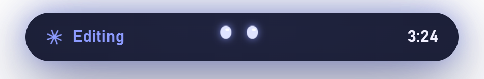
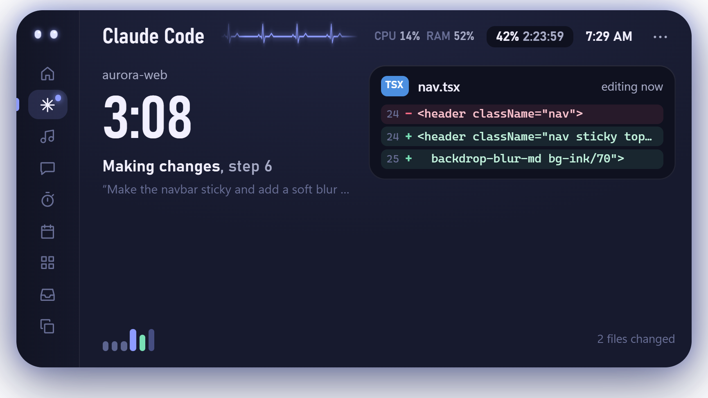
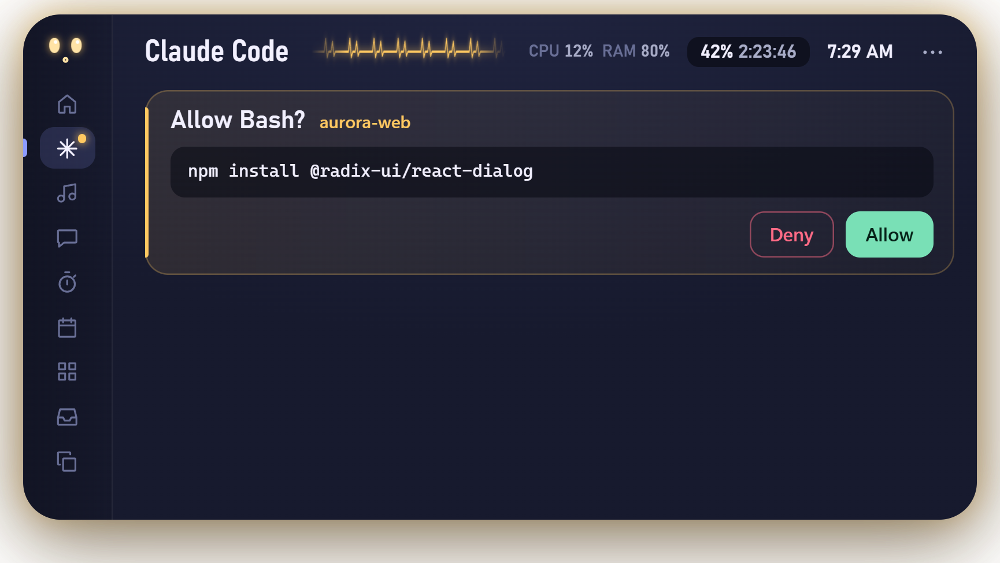
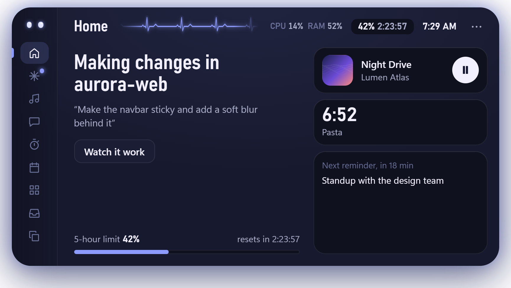
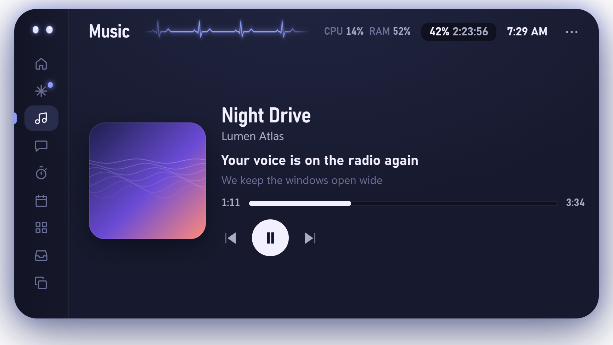
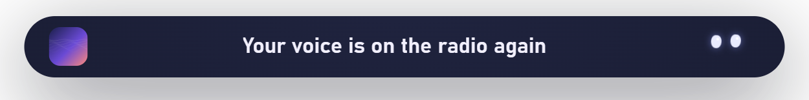
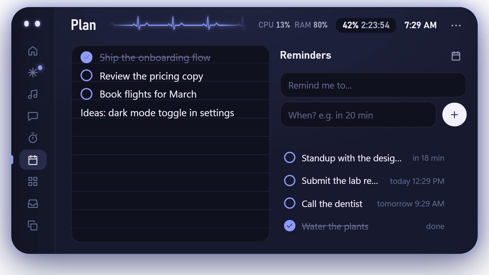
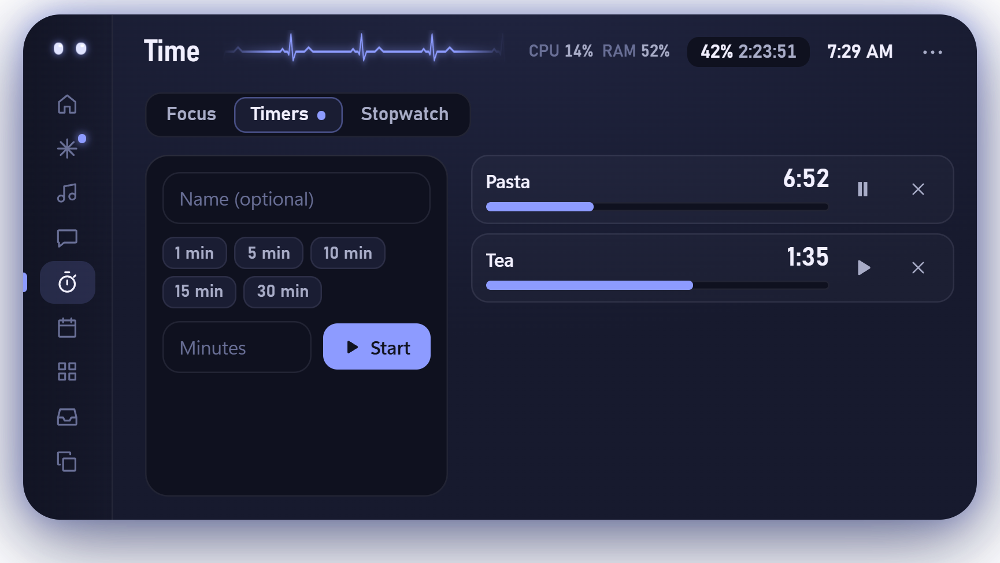
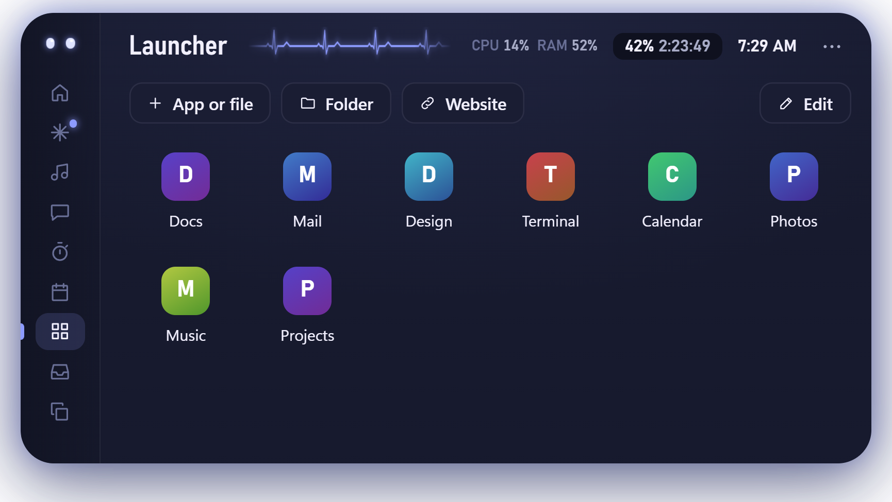
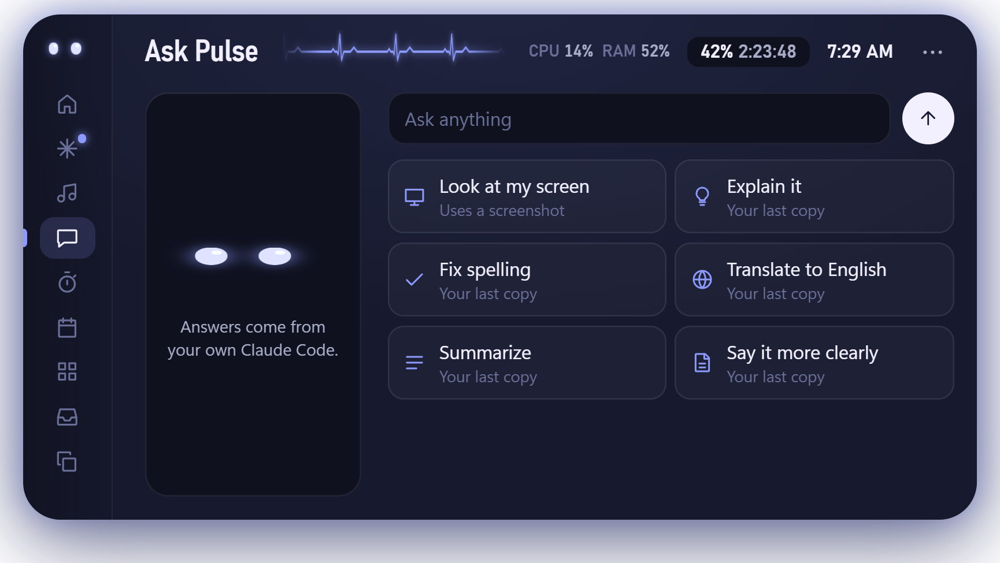

01 / 03
Glance up. It’s on it.
Pulse follows every Claude Code session: which file it’s reading, the change it’s making, and how long the job has been running.
A small living island at the top of your screen. It follows Claude Code as it works, asks before anything important, and keeps your music, timers and reminders one hover away.

Pulse follows every Claude Code session: which file it’s reading, the change it’s making, and how long the job has been running.
Permission requests, questions and plans land in the island. Allow or deny in one click while you keep doing what you were doing.
A soft chime, a mint glow and a summary of what changed. Fold it away and get back to your day.



Move your mouse to the top of the screen and Pulse unfolds. Move away and it folds itself back into a capsule.
Whatever is playing on your PC, with artwork, seek and controls. While a song plays, the capsule widens and sings along line by line.


Jot a note on the left and set reminders on the right. Type the time the way you’d say it: “in 20 min”, “5pm”, “tomorrow 9am”.

A focus dial for deep work, as many named timers as you need, and a stopwatch with laps. Whatever is running shows in the capsule.

Pin what you open all the time and launch it from the island. Drop files onto the page to add them, then rename and reorder.

Explain something, fix spelling, translate or summarise your last copy, or ask about what’s on your screen. Answers come from the Claude Code you already use.

Six ready-made pairs, or pick any main and secondary colour in Settings. Pulse keeps the body dark enough that text always stays readable.
Pulse runs on your PC. There’s no account, and nothing leaves your computer unless you ask it to.
Free for Windows 10 and 11. Unzip it, open it, and the island appears at the top of your screen.
Pulse isn’t code-signed yet, so Windows may say “Windows protected your PC” the first time. Choose More info, then Run anyway.
The Mac version isn’t notarized by Apple yet, which is why macOS asks you to allow it once. Allow Pulse to control Spotify or Music when asked, so the music controls work.